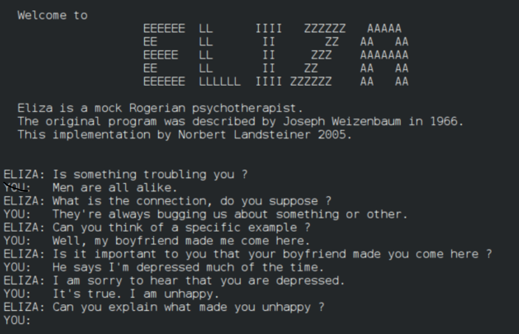

Another early programming language was devised by Grace Hopper in the US, named FLOW-MATIC.
It was developed for the UNIVAC I at Remington Rand during the period from 1955 until 1959. Hopper found that business data processing customers were uncomfortable with mathematical notation,
and in early 1955, she and her team wrote a specification for an English language programming language and implemented a prototype.The FLOW-MATIC compiler became publicly available in early 1958 and was substantially complete in 1959. Flow-Matic was a major influence in the design of COBOL,
since only it and its direct descendant AIMACO were in use at the time.Other languages still in use today include LISP (1958), invented by John McCarthy and COBOL (1959), created by the Short Range Committee. Another milestone in the late 1950s
was the publication, by a committee of American and European computer scientists, of "a new language for algorithms"; the ALGOL 60 Report (the "ALGOrithmic Language"). This report consolidated many ideas circulating at the time and featured three key language innovations:
nested block structure: code sequences and associated declarations could be grouped into blocks without having to be turned into separate, explicitly named procedures;lexical scoping: a block could have its own private variables, procedures and functions, invisible to code outside that block, that is, information hiding.Another innovation, related to this, was in how the language was described:a mathematically exact notation, Backus - Naur form (BNF), was used to describe the language's syntax. Nearly all subsequent programming languages have used a variant of BNF to describe the context-free portion of their syntax. ALGOL 60 was particularly influential in the design of later languages, some of which soon became more popular. The Burroughs large systems were designed to be programmed in an extended subset of ALGOL.ALGOL's key ideas were continued, producing ALGOL 68:syntax and semantics became even more orthogonal, with anonymous routines, a recursive typing system with higher-order functions, etc.;not only the context-free part, but the full language syntax and semantics were defined formally, in terms of Van Wijngaarden grammar, a formalism designed specifically for this purpose.ALGOL 68's many little-used language features (for example, concurrent and parallel blocks) and its complex system of syntactic shortcuts and automatic type coercions made it unpopular with implementers and gained it a reputation of being difficult. Niklaus Wirth actually walked out of the design committee to create the simpler Pascal language.
 back to main manu